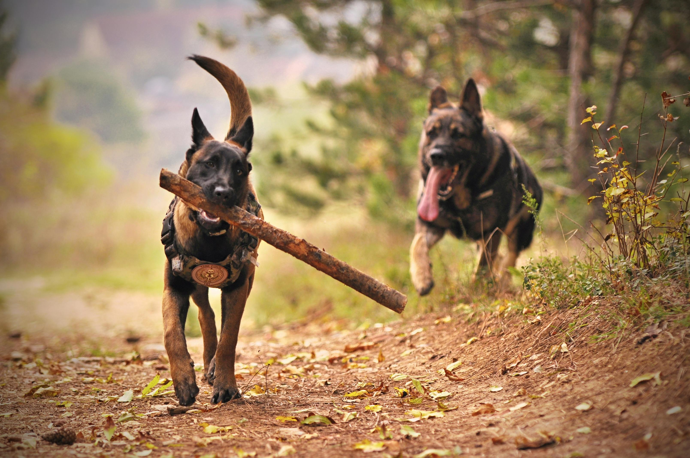

Hi, I’m Stephany Garces Guerra—an MBA candidate, web developer, and aspiring consultant with a passion for problem-solving and innovation. My journey spans marketing, program management, and tech, blending strategic thinking with hands-on execution. Whether it’s building user-friendly web applications, crafting data-driven solutions, or leading teams toward impactful goals, I thrive in dynamic environments. Let’s connect and create something meaningful!
My journey is a fusion of creativity, strategy, and technology. With a background in business and program management, I’ve built a career that bridges community impact, professional development, and tech-driven problem-solving. As the co-founder of Gratis Grove, I’ve led initiatives that address food insecurity and education access. My transition into tech began with The Knowledge House Web Development Innovation Fellowship, where I mastered full-stack development. As tech is ever evolving, I am also actively expanding my skills other languages like Python. Currently pursuing my MBA with a concentration in Computer Information Systems, I leverage my diverse experiences to develop innovative solutions at the intersection of business and technology.
Beyond academics and professional work, I’ve been actively involved in leadership roles, from organizing events for graduate students to supporting Latinx professionals through Prospanica NY. My adaptability, quick learning ability, and problem-solving mindset drive me to create digital experiences that are both functional and impactful.
On a fun side, I am very interested in strength training, waking up at 4:30am to do so 5x a week, martial arts, recently started Brazilian Jiu Jitsu, and more recently earned my scuba diving certification.
Skills
- Full-Stack Web Development - MERN
- Project & Program Management
- Data Analysis & SQL
- Communication & Leadership

PROJECT: GOLDIE
A networking platform for aspiring and professional developers to connect, collaborate, and share resources. Built using React, Node.js, and MongoDB, it features real-time chat, profile creation, and project collaboration tools.

PROJECT: DOG WITH STICK
A job application tracking tool that helps users stay organized throughout their job search. Includes automated reminders, interview prep resources, and a dashboard for tracking application statuses. Developed with Express.js, PostgreSQL, and React.

PROJECT: THREE BOXERS
A fitness and nutrition tracking app that allows users to log workouts, track protein intake, and get personalized meal suggestions. Designed with user-friendly UI/UX principles using Next.js, Firebase, and Tailwind CSS.